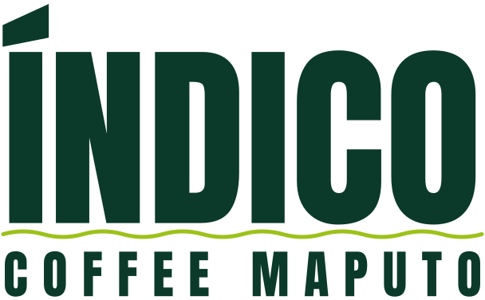

Erro 404
Esta página entornou-se.
A página que procura não existe ou mudou de sítio. O café, esse, continua onde sempre esteve.

LigarErro 404
A página que procura não existe ou mudou de sítio. O café, esse, continua onde sempre esteve.
Desenvolvido por Eclesio Pembelane